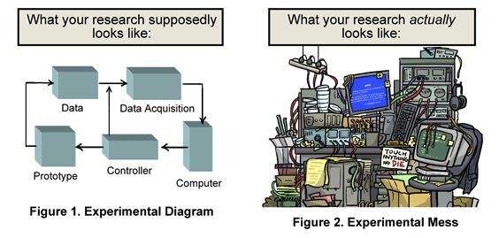
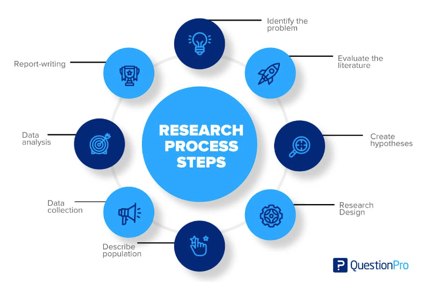
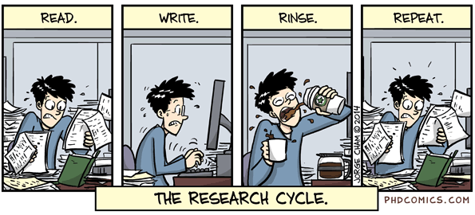
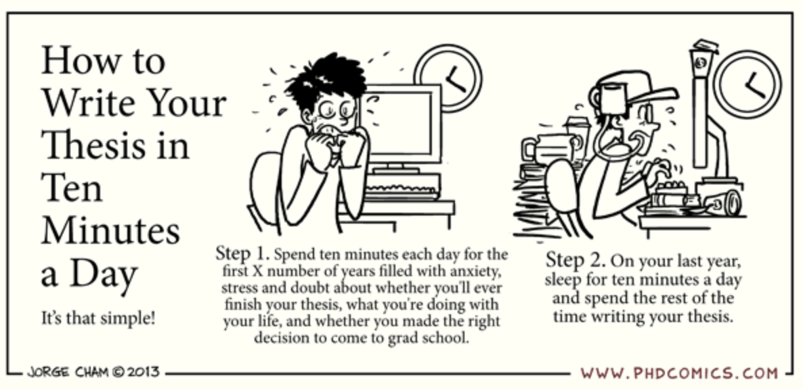

🗓️ Week 01
Introduction
SEMINARIO II
01 Apr 2025
Who we are
Your lecturer

Investigador senior Minciencias
Investigador principal SDGnexus Network
- PhD in Geography
- MSc in GIScience
- Background: Civil Engineer
machine and deep learning
Earth observation
Territorial sustainability
Students
Please introduce yourselves
:::
A refresher on science & research
Knowledge
Knowledge refers to a theoretical and/or practical understanding of a subject. It can be implicit or explicit; it can be more or less formal or systematic. In philosophy, the study of knowledge is called epistemology. Knowledge acquisition involves complex cognitive processes: perception, communication, and reasoning.
https://www.librarianshipstudies.com/2017/11/knowledge.html
Science and technology (Sc&T)
Science uses empirical investigation to pursue many of the deepest questions pondered by scholars. Engineering uses empirical knowledge to design and develop technology: products, processes, machines, and structures to solve the major challenges that face society. Together, Sc&T are essential to advance the human condition.
https://corecurriculum.nd.edu/our-core-curriculum/ways-of-knowing/science-and-technology/
Research
Research is a process of systematic inquiry that entails collection of data; documentation of critical information; and analysis and interpretation of that data/information, in accordance with suitable methodologies set by specific professional fields and academic disciplines.
https://www.hampshire.edu/what-research
What is a researcher? (1)
A researcher is someone who conducts systematic investigations and studies of materials and sources to establish facts, reach new conclusions, and develop theories.
https://typeset.io/questions/what-is-a-researcher-3hwiofeb8w
What is a researcher? (2)

Research methodology
It is a structured and scientific approach used to collect, analyze, and interpret quantitative or qualitative data to answer research questions or test hypotheses. A research methodology is like a plan for carrying out research.
Quantitative research methodology
It focuses on measuring and testing numerical data. This approach is good for reaching a large number of people in a short amount of time. This type of research helps in testing the causal relationships between variables, making predictions, and generalizing results to wider populations.
https://paperpal.com/blog/academic-writing-guides
Qualitative research methodology
It examines the opinions, behaviors, and experiences of people. It collects and analyzes words and textual data. This research methodology requires fewer participants but is still more time consuming because the time spent per participant is quite large. This method is used in exploratory research.
https://paperpal.com/blog/academic-writing-guides
Mixed-method research methodology
It uses both quantitative and qualitative methodologies in the same study. This method allows to validate findings, verify if the results observed using both methods are complementary, and explain unexpected results obtained from one method by using the other method.
https://paperpal.com/blog/academic-writing-guides
Research process

Research cycle

Writing a research article
Primacy of the research question
A good research paper addresses a specific research question. The research question—or study objective or main research hypothesis—is the central organizing principle of the paper. Whatever relates to the research question belongs in the paper; the rest doesn’t.
Structure of the research paper
- Introduction
- Methods
- Results
- Discussion
Introduction
- Problem statement
- Knowledge gaps
- Research question
Data & Methods
- Study context & setting
- Study design (framework, variables, sampling)
- Population (or study area)
- Workflow (data collection, data analysis)
Results
- Description of workflow outputs
- Present key findings
Discussion
- Answer the research question
- Discuss findings from a broader perspective
- Analyze strengths and limitations
- Offer perspectives
To do before next class
Questions?


2020771 – SEMINARIO II